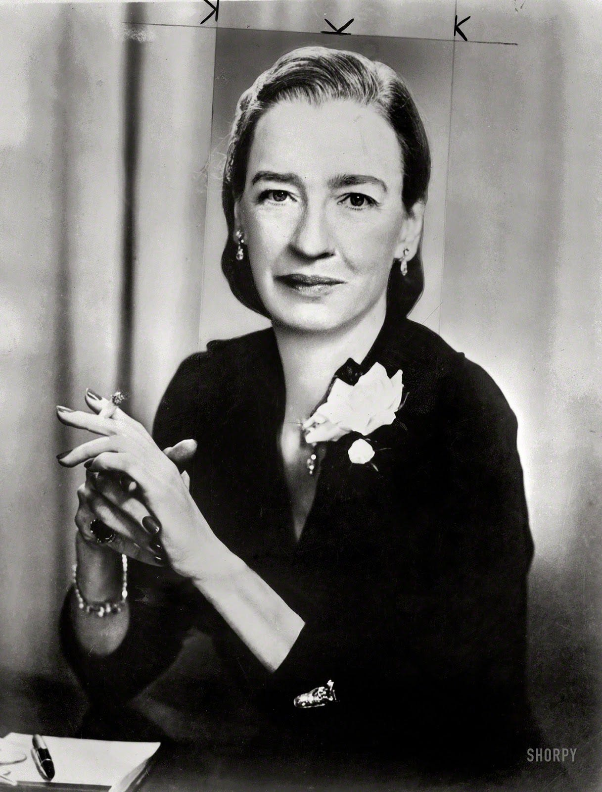

Grace Murray Hopper
Grace Murray Hopper (Nova Iorque, 9 de dezembro de 1906 — Condado de Arlington, 1 de janeiro de 1992) foi almirante e analista de sistemas da Marinha dos Estados Unidos nas décadas de 1940 e 1950, criadora da linguagem de programação de alto nível Flow-Matic (em desuso) — base para a criação do COBOL — e uma das primeiras programadoras do computador Harvard Mark I[1] em 1944.
|  | Antes da Marinha, Hopper conquistou o Ph.D. em matemática na Universidade de Yale e foi professora de matemática na Faculdade Vassar. Tentou entrar na Marinha durante a Segunda Guerra Mundial, mas foi rejeitada por ter 34 anos. Por consequência, entrou na Navy Reserves (em tradução livre, a Reserva da Marinha). Em 1944, começou sua carreira em computação, quando trabalhou no Mark I de Harvard no time conduzido por Howard H. Aiken. Neste período, foi co-autora de três artigos científicos baseados nesse projeto. Em 1949, ela passou a participar do Eckert-Mauchly Computer Corporation e fez parte do time que desenvolveu o computador UNIVAC I. Enquanto estava no Eckert-Mauchly, começou o desenvolvimento do seu compilador. O programa dela convertia termos em Inglês para código de máquina e em 1952, tinha terminado o desenvolvimento do seu programa ligador (originalmente chamado de compilador), o qual foi desenvolvido para o Sistema A-0. Não participou efetivamente na criação da linguagem COBOL, mas de um subcomitê originado de um dos três comitês (o de Curto Prazo) propostos em uma reunião no Pentágono em Maio de 1959, que desenvolveu as especificações da linguagem COBOL. Ele era formado por seis pessoas: William Selden e Gertrude Tierney da IBM; Howard Bromberg e Howard Discount da RCA; Vernon Reeves e Jean E. Sammet da Sylvania Electric Products. A concepção de Hopper de que havia a necessidade de se criar uma linguagem orientada para negócios comuns deu origem ao acrônimo COBOL (Common Business Oriented Language). Tudo foi feito sem definir os comandos para minimizar melindres entre os técnicos das empresas convocadas a participar da criação de um denominador comum entre todos os fabricantes existentes na época. Grace Hopper participou contribuindo com a abertura dos comandos FLOW-MATIC. É dito que é de autoria de Hopper o termo "bug" usado para designar uma falha num código-fonte. Quando procurava um problema em seu computador; percebeu que havia um inseto morto no computador causando transtorno, desde então o termo bug passou a ser usado. Mas existem outras versões que contradizem a origem verdadeira do termo "bug". Uma das versões é de Thomas Edison que casualmente tem muita semelhança com a história da analista. Um inseto que causou problemas de leitura em seu fonógrafo em 1878 Em 1998 recebeu a honra de ter seu nome em um navio da Marinha. O contratorpedeiro USS Hopper entrou no serviço ativo em 1998. Além disso, o supercomputador da NERSC foi nomeado em sua homenagem, chamando Cray XE6 "Hopper". Durante a sua vida, ela recebeu 40 diplomas honorários de universidades ao redor do mundo. Uma faculdade na Universidade de Yale foi renomeada em sua homenagem. Em 1991 recebeu uma Medalha Nacional de Tecnologia e no dia 22 de Novembro de 2016 foi postumamente premiada com a Medalha Presidencial de Liberdade pelo Presidente Barack Obama.[2] |
Aposentadoria
De acordo com os regulamentos de atrito da Marina, Hopper se aposentou da Reserva da Marina com o cargo de comandante com 60 anos no final de 1966.[21] Ela foi chamada novamente para dever ativo em Agosto de 1967 por seis meses que se transformou em indefinido. Ela se aposentou novamente em 1971 mas foi chamada novamente em 1972. Ela foi promovida para capitã em 1973 pelo Admiral Elmo R. Zumwalt, Jr.[22]
Depois que o Representante Republicano Philip Crane viu ela em um segmento Março 1983 de 60 Minutes, ele forneceu patrocínio à H.J.Res. 341, uma resolução colaborativa originada na Câmera de Representantes, a qual levou a promoção dela em 15 de Dezembro de 1983 por nomeação especial Presidencial pelo Presidente Ronald Reagan.[22]